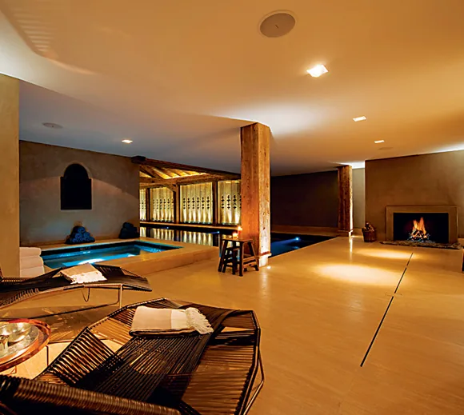

01
Erstgespräch & Idee
Wir hören zu, klären Ihr Vorhaben, sehen uns Ort und Bestand an und ordnen ein, was möglich ist.
Leistungen
Architektonische Planung für private und gewerbliche Bauvorhaben: vom Entwurf über die Grundrissplanung bis zur Begleitung auf der Baustelle, mit einem festen Ansprechpartner.

Sie möchten Ihre Wohnung oder Ihr Haus im Bestand umbauen, modernisieren oder energetisch fit für die Zukunft machen? Wir planen den Umbau vom Aufmaß bis zum fertigen Entwurf – mit Blick darauf, was die vorhandene Substanz hergibt und was wirtschaftlich sinnvoll ist.
Von der energetischen Modernisierung über neue Grundrisse bis zur behutsamen Aufwertung: Wir entwickeln eine Planung, die zu Ihrem Vorhaben und Ihrem Budget passt – Schritt für Schritt, auch im bewohnten Zustand.
Mehr Platz, ohne neu zu bauen: Anbau, Aufstockung und Dachausbau schaffen zusätzlichen Wohnraum dort, wo Sie schon leben. Wir prüfen, was baulich und planungsrechtlich möglich ist, und übersetzen das in einen tragfähigen Entwurf.
Ob ausgebautes Dachgeschoss, aufgesetztes Staffelgeschoss oder ein Anbau im Garten – wir planen den Zugewinn so, dass er sich selbstverständlich in das bestehende Gebäude einfügt.


Ein neuer Grundriss, ein durchdachtes Raumkonzept, eine andere Nutzung: Beim Innenausbau planen wir Räume so, dass sie zu Ihrem Alltag passen – von der Wohnung bis zur Gewerbe- oder Praxisfläche.
Wir begleiten die Umnutzung bestehender Flächen, entwickeln Grundriss und Raumaufteilung und stimmen Material, Licht und Details aufeinander ab.
Sie planen ein eigenes Haus? Wir entwerfen und planen Neubauten – vom Einfamilienhaus über das Doppelhaus bis zum Mehrfamilienhaus. Von der ersten Skizze über den Entwurf bis zur ausführungsreifen Planung bleiben wir Ihr fester Ansprechpartner.
Uns geht es um Architektur mit Substanz: klare Grundrisse, gutes Tageslicht, dauerhafte Materialien und eine Planung, die zu Grundstück, Nachbarschaft und Budget passt.

Wir bringen Erfahrung aus über 2.000 in leitender Rolle verantworteten Wohneinheiten sowie Schul- und Gewerbebauten mit – jetzt persönlich für Ihr Vorhaben. Diese Erfahrung fließt heute in jeden Entwurf, jede Grundrissplanung und jede Baubegleitung ein.
Ablauf
Von der ersten Idee bis auf die Baustelle begleiten wir Ihr Projekt in klaren Schritten – mit einem festen Ansprechpartner und nachvollziehbaren Entscheidungen. Die Schritte folgen den Leistungsphasen der HOAI.
Wir hören zu, klären Ihr Vorhaben, sehen uns Ort und Bestand an und ordnen ein, was möglich ist.
Aus Ihren Wünschen entwickeln wir einen Entwurf mit tragfähigem Grundriss und ersten Kostengrößen.
Die Unterlagen für den Bauantrag erstellen wir gemeinsam mit bauvorlageberechtigten Partner:innen aus unserem Netzwerk und stimmen die notwendigen Nachweise ab.
Details, Maße und Materialien werden bis zur ausführungsreifen Planung durchgearbeitet.
Wir begleiten die Umsetzung auf der Baustelle, behalten Qualität und Termine im Blick und bleiben Ihr Ansprechpartner.
Ein Anbau erweitert das Gebäude in der Fläche, zum Beispiel zum Garten hin. Eine Aufstockung setzt ein zusätzliches Geschoss auf das bestehende Haus. Beim Dachausbau wird ein vorhandener Dachraum zu Wohnraum, meist innerhalb der bestehenden Dachform. Welche Lösung passt, hängt von Grundstück, Statik und Baurecht ab.
Das hängt vom Vorhaben ab. Änderungen im Inneren ohne Eingriff in tragende Bauteile sind oft ohne Verfahren möglich. Anbauten, Aufstockungen, Eingriffe in die Statik, Nutzungsänderungen und Änderungen an der Fassade sind in der Regel bei der Bauaufsicht des Bezirks zu beantragen oder anzuzeigen. Die Bauordnung für Berlin wurde 2024 und 2026 mehrfach geändert. Wir klären deshalb zu Beginn, welches Verfahren für Ihr Vorhaben gilt.
Die Honorarordnung für Architekten und Ingenieure (HOAI) gliedert die Planung eines Gebäudes in neun Leistungsphasen: 1 Grundlagenermittlung, 2 Vorplanung, 3 Entwurfsplanung, 4 Genehmigungsplanung, 5 Ausführungsplanung, 6 Vorbereitung der Vergabe, 7 Mitwirkung bei der Vergabe, 8 Objektüberwachung (Bauüberwachung) und 9 Objektbetreuung. Die Phasen lassen sich einzeln oder im Paket beauftragen.
Häufig ja. Wir planen Umbau und Sanierung Schritt für Schritt, auch im bewohnten Zustand. Ob das sinnvoll ist, hängt vom Umfang der Arbeiten ab, etwa bei Bädern, Leitungen oder Eingriffen in die Decken.
Ja. Beim Innenausbau und bei Umnutzungen planen wir neben Wohnungen auch Büro-, Gewerbe- und Praxisflächen, einschließlich Grundriss, Raumaufteilung, Material und Licht.
Beschreiben Sie uns Ihr Vorhaben. Wir sagen Ihnen, welche Leistungen dafür sinnvoll sind, und melden uns innerhalb weniger Tage.